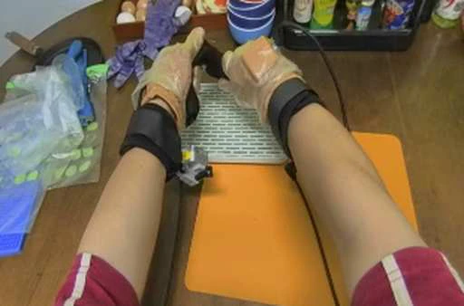
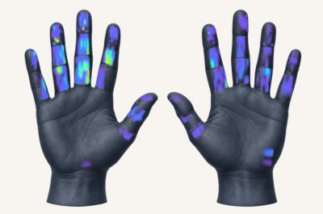
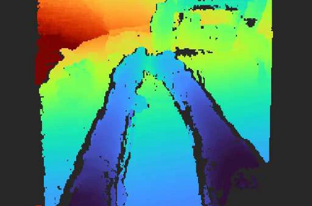
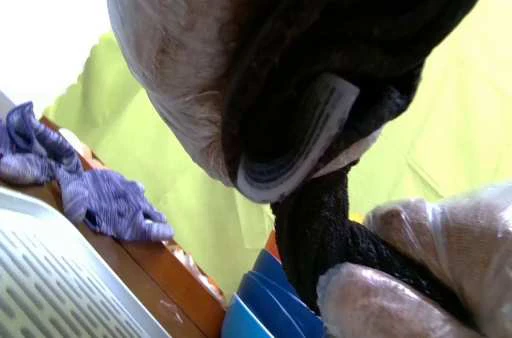
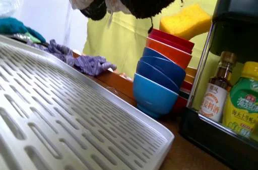

Egocentric RGB6.0 sTouchScale
500 Hours of Human Vision and Touch for Visual–Tactile Learning
TouchScale captures 500 hours of human interaction across laboratories, kitchens, workbenches, and everyday settings. Synchronized egocentric RGB-D, wrist cameras, and dense bimanual touch reveal how people see, handle, and feel the world.
Data Collection Setup
Egocentric RGB-D and dual wrist RGB record at 30 Hz. Tactile gloves provide 880 taxels per hand, covering all five fingers and the palm.
Synchronized observations

Bimanual tactile contact
Head depth
Left wrist
Right wristEveryday Interactions, in Detail
No matching samples
Try another task, object, or setting.
From Human Touch to Robot Learning
Robot platform
An xArm6 arm with a BrainCo Revo 2 hand combines tactile sensing with ego-view and wrist cameras.
Both policy variants use 50 robot demonstrations per task for post-training and are evaluated over 20 trials per task.
Policy rollouts
Policy rollout
Soft / Hard Sorting
Policy rollout
Bottle-Cap Removal
Policy rollout
Test-Tube Transfer
Policy rollout
Whiteboard Wipe
Scale and Task Diversity
500 hoursHuman interaction
~87KRecorded clips
1,964Task descriptions
1.5K+Everyday objects
800+Scene configurations